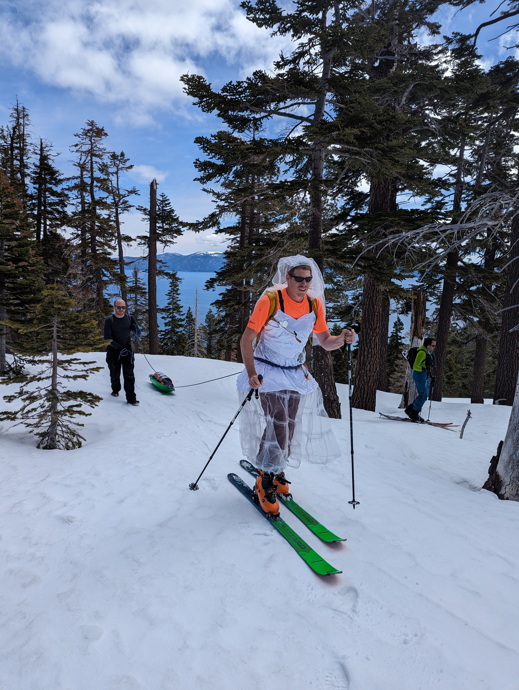
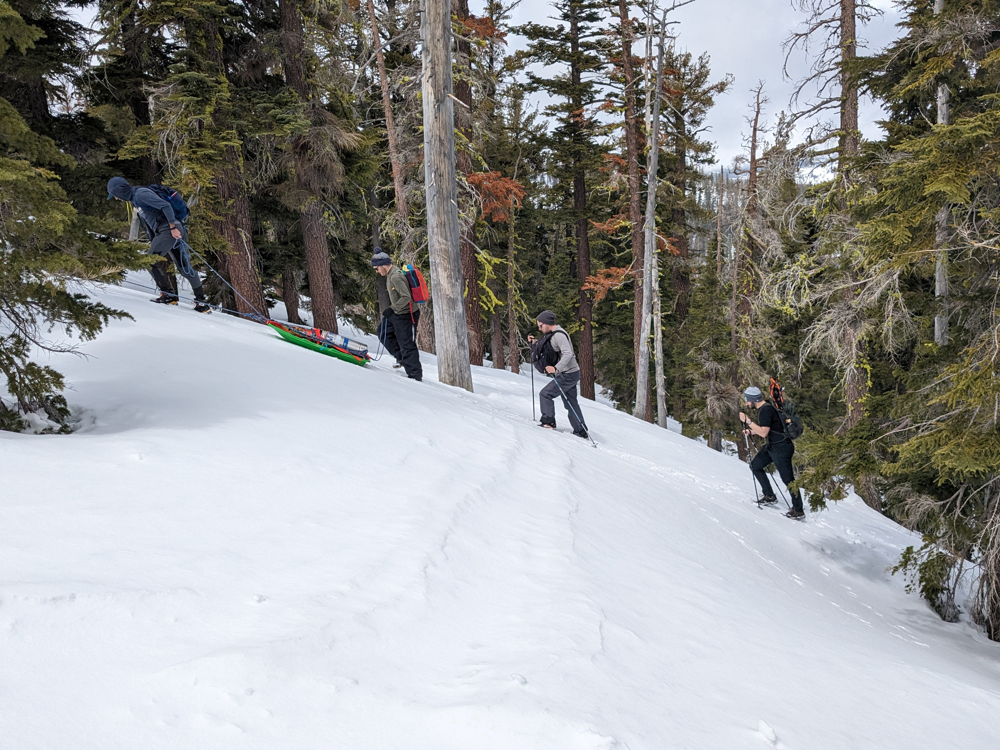
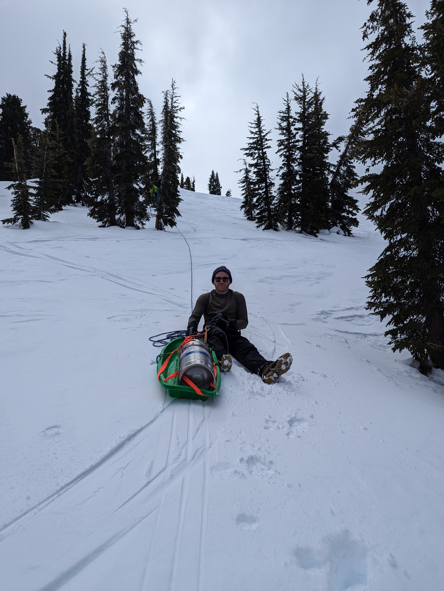
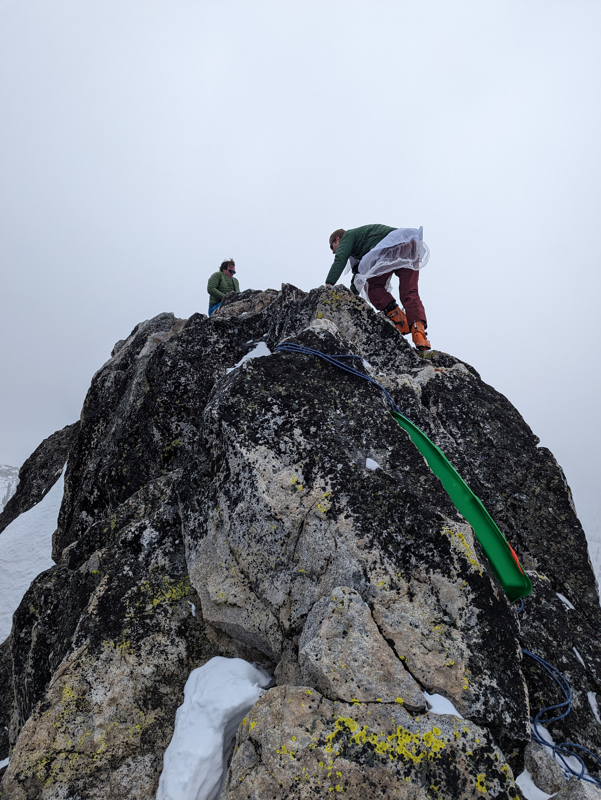
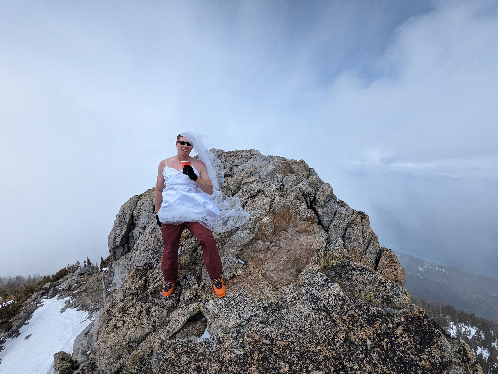
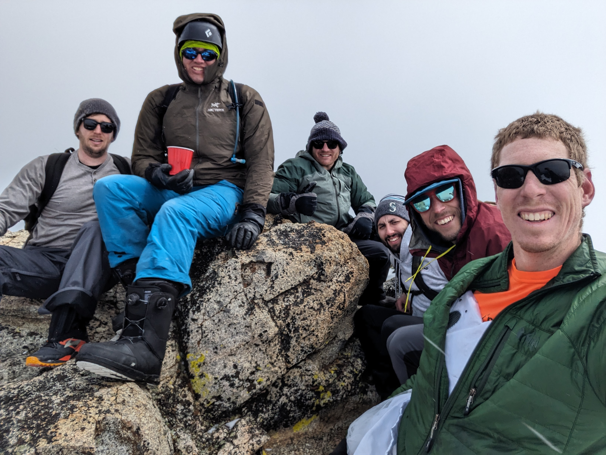

A team of seven bachelor party revelers braved adverse conditions (i.e., hangovers) and completed what might possibly be the first keg ascent of Rubicon Peak. Rubicon is a 9183-foot summit that rises from the southwestern shore of Lake Tahoe and rings the Desolation Wilderness. There is a steep summer trail followed by a short scramble up the summit block. In the winter, Rubicon is a common backcountry ski objective as a straightforward way to get some vert.
We rigged up a Wal-Mart sled with a mishmash of retired climbing rope and various webbing and alipine draws to facilitate pulling. Progress was slow and jovial; as the groom-to-be, I was forced to wear a... uniform.. or sorts. We had a mixed group of abilities, ranging from seasoned mountaineers and veterans of prior contrived keg hauling affairs to those who had never hiked on snow before, and so we took it leisurely.


The upper slopes of Rubicon are quite steep, and conditions were fairly icy. For the final 800 feet or so, we could no longer skin the keg up and needed to haul it from a stationary position. We would anchor the sled in with an ice axe, set a temporary anchor at a tree, and then pull the sled up, one pitch at a time. There were also some impromptu lessons in using snow traction for several party members. I was super proud of those guys for safely questing up in a totally unfamiliar environment.

We were all pretty sick of hauling by the time we got to the base of the summit block, but Nick rightfully insisted that it would not be a true keg ascent if we didn't get the keg to the true summit. We paused for a... hydration break to slightly ease the "logistics" and then ventured up the summit block, trailing a line. We hauled the keg up to a hasty anchor (with Trevor scambling along with the keg to keep it from getting stuck) and and fixed it there. We then broke out the solo cups and enjoyed a celebratory round in a white out.



The descent started out quite slow in the icy conditions, but picked up the pace once everyone was back on comfortable terrain. I got the best turns I've ever had while wearing a wedding dress, which is not saying a whole lot. We all made it back in one piece and I successfully got married the month after.
Interestingly, the folks at Alibi Aleworks also skinned a keg up Rubicon Peak the year after, and kindly (temporarily) left it there as an offering for future skiers to enjoy a summit beer (https://www.instagram.com/p/DIwYJ_qPus5/). It does not appear that they attempted the summit block, however.